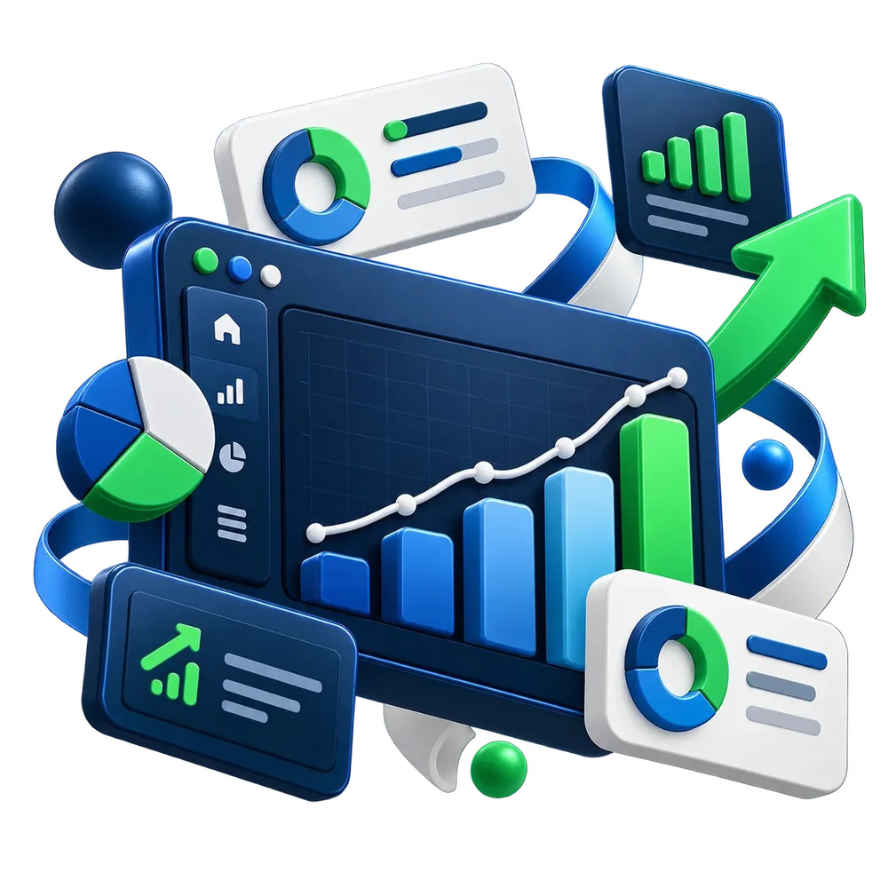

Dashboards sob medida
Tenha seus indicadores financeiros, comerciais e operacionais em painéis claros, feitos para o seu negócio.
Seus dados. Sua visão.Acompanhe finanças, vendas, custos e operações em dashboards e relatórios feitos para a sua empresa. Transformamos dados em uma visão simples para você ganhar controle, identificar economias e decidir com confiança, de onde estiver.

Informações dispersas não precisam virar decisões difíceis. Unimos tecnologia, leitura de indicadores e acompanhamento para deixar sua operação mais previsível.
Tenha seus indicadores financeiros, comerciais e operacionais em painéis claros, feitos para o seu negócio.
Seus dados. Sua visão.Transforme números em perguntas relevantes, sinais de alerta e possibilidades de melhoria para sua gestão.
Menos achismo. Mais contexto.Identifique gargalos, desperdícios e oportunidades para melhorar margens com análises orientadas à ação.
Encontrar oportunidades.Mais do que um dashboard: relatórios organizados, acompanhamento e apoio para interpretar os números que orientam sua gestão.
Inteligência contínua.Receitas, despesas, vendas, margens e desempenho em uma única visão gerencial. Acompanhe relatórios sem depender de planilhas espalhadas e tenha suas informações ao alcance da mão.
Nem sempre a oportunidade está em vender mais. Às vezes ela está em compreender custos, rever processos e descobrir onde seu resultado está ficando pelo caminho.
Encontrar oportunidadesOrganize despesas e taxas para entender como elas impactam sua operação.
Cruze dados de vendas, margens e produtividade para enxergar novas oportunidades.
Saiba onde concentrar esforços para melhorar eficiência e acompanhar resultados.
Da farmácia à transportadora, sua operação ganha uma visão gerencial dos indicadores que realmente importam. Selecione um segmento para explorar.
Controle de vendas, margens, estoque e desempenho por unidade.
Quero essa visão para minha empresaA Hub BI entende a realidade da sua empresa e desenha a inteligência necessária para a gestão evoluir com consistência.
Entendemos seus desafios, fontes de dados e indicadores prioritários.
Estruturamos as informações para uma leitura integrada e consistente.
Criamos dashboards e análises alinhados à realidade do negócio.
Olhamos os resultados juntos e apoiamos decisões de melhoria.
Inteligência empresarial exige responsabilidade. Nossa abordagem prevê organização das informações e definição de boas práticas de acesso e governança adequadas à realidade de cada projeto.
Ficou com alguma dúvida? Nossa equipe pode conversar sobre seu cenário e avaliar o melhor caminho.
Falar pelo WhatsAppNão. A proposta da Hub BI é entregar dashboards próprios, inteligência aplicada e assessoria, com uma experiência personalizada para cada empresa.
Não necessariamente. Começamos identificando as fontes disponíveis — planilhas, relatórios e sistemas — e avaliamos como estruturar essas informações com consistência.
Podemos desenvolver dashboards para acompanhar indicadores financeiros e apoiar processos de gestão. A Hub BI não se apresenta como serviço de execução de pagamentos, cobranças ou contabilidade.
Sim. O escopo é definido conforme o segmento, o volume de dados, os indicadores e as necessidades de acompanhamento da sua operação.
Os painéis e análises podem ajudar a identificar oportunidades de economia e eficiência. Resultados dependem dos dados disponíveis, das condições da empresa e das ações adotadas.
Conte um pouco sobre seu negócio. Vamos entender quais relatórios, dashboards e indicadores podem melhorar seu controle e suas decisões.
Preencha os campos para iniciar seu atendimento.